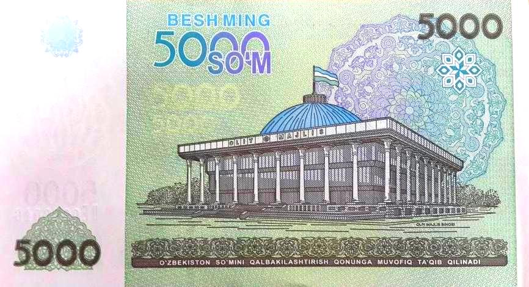

HUMO Stablecoin Pilot Begins in Uzbekistan: Token Pegged 1:1 to the Soum to Be Tested at More Than 20 Retail Locations
The National Agency of Perspective Projects has registered Humo Digital. The token is backed by government securities, and the trial will run for 12 months.

On Sept. 7, 2026, Uzbekistan's National Agency of Perspective Projects (NAPP) announced it had registered Humo Digital, the issuer of the HUMO stablecoin, to conduct a pilot project. The token will be used for payments as part of the trial.
HUMO is pegged at 1 token = 1 soum and is fully backed by government securities. More than 20 local retail locations have agreed to accept payment in HUMO for goods and services during the pilot.
How the trial is structured
The pilot's main term is 12 months, with a maximum term of up to three years if extended. Three phases of the token will be tested over the course of the trial: issuance, circulation and redemption.
- Token: HUMO, pegged 1:1 to the soum
- Backing: government securities
- Issuer: Humo Digital
- Participating retail locations: more than 20
- Term: 12 months (up to a maximum of 3 years)
- Partner: Asterium — a licensed crypto exchange
What the regulator will assess
According to NAPP, regulators will monitor several areas over the course of the trial: the adequacy of the backing, cybersecurity, consumer protection, anti-money-laundering requirements, and risks related to financial and price stability.
Put differently, the aim of the pilot is not the mass rollout of the token but a test of whether it works technically and legally within a limited scope.
Context: policy on digital assets
Uzbekistan has been building a separate legal regime for digital assets in recent years. Crypto exchanges have been brought under a licensing procedure, trading is conducted only through registered platforms, and reporting requirements have been introduced for operators.
Over the course of 2026, this track intersected with another major initiative: the establishment of the Tashkent International Financial Centre (TIFC). The center provides for a special regime based on English law, its own commercial court and tax incentives; on Sept. 10, Saida Mirziyoyeva was appointed to head it.
What a stablecoin is and why states are interested
A stablecoin is a digital token whose value is pegged to some asset — usually a national currency or government bonds. By reducing exchange-rate volatility, they can make everyday payments easier.
A model backed by government securities serves a dual function: on one hand it provides backing for the token, and on the other it creates additional demand for government debt paper. It is for precisely this reason that international financial institutions watch such systems closely from the standpoint of liquidity and transparency of backing.
What matters for the diaspora
For Uzbek citizens living in the United States and other countries, the most practical question is whether such instruments will affect the cost of cross-border remittances. For now the pilot is intended only for domestic payments, and cross-border transfers are not within its scope.
In the first quarter of 2026, $3.8 billion in remittances crossed the border into Uzbekistan. The bulk of this flow is handled through traditional banking and payment systems.
What remains unclear
Why a pilot regime was chosen
A regulatory pilot (sometimes called a regulatory sandbox) is a procedure for testing a new financial product within a limited scope under special supervision. This approach has been adopted in many countries over the past decade.
Its basic logic is this: a new product may not fully meet all the requirements of existing legislation, but rather than banning it outright, testing it under constrained conditions gives the regulator real data.
In HUMO's case the limits are clearly defined: the number of participating retail locations is just over 20, the term is 12 months, and the issuer has been registered separately.
The question of backing
The stability of stablecoins depends on the quality of their backing. International practice distinguishes among types of backing: cash and short-term government bonds are considered the most liquid; corporate paper or other crypto assets carry higher risk.
HUMO is backed by government securities. This model is considered relatively conservative from the standpoint of the backing's liquidity, but it ties the token's stability to the condition of the government debt market.
Regulators have announced they will monitor the adequacy of the backing during the trial — that is, they intend to verify that the volume of tokens in circulation does not exceed the value of the assets covering them.
The payment systems context
Card payments and settlement through mobile applications have expanded rapidly in Uzbekistan in recent years. The name “Humo” also belongs to one of the country's national payment systems, which manages the servicing infrastructure for bank cards.
The Central Bank is at the same time discussing the possibility of integrating the unified QR payment system with international payment ecosystems. This would allow foreign visitors to pay in Uzbekistan through their own applications and Uzbek citizens to use such services abroad.
The list of risks
- Adequacy of the backing and the procedure for verifying it
- Cybersecurity and key storage
- Consumer protection — the guarantee of token redemption
- Anti-money-laundering requirements (AML)
- Financial stability: the possibility of a shift from bank deposits into the token
The last point is singled out in international discussions: if a stablecoin becomes widespread, part of the public's funds may move from bank deposits into the token, which could affect the resource base of the banking sector.
Next stages
At the end of the trial, the regulator is expected to prepare a report and, on that basis, to establish a permanent legal regime for the token. No deadline for such a document has been announced so far.
Other experiences in the region
Several tracks in digital payment instruments are developing in Central Asia. Kazakhstan has launched a unified national QR system and is working to introduce cross-border QR payments with 11 countries; the list includes Uzbekistan, China, India, the UAE and Kyrgyzstan.
In addition, the region's central banks are testing central bank digital currency (CBDC) projects at various stages. Stablecoins and CBDCs differ from each other: the first is issued by a private issuer and backed by an asset, while the second is a liability of the central bank itself.
The link to the Tashkent financial center
The constitutional law on the Tashkent International Financial Centre (TIFC) was signed in July 2026. The center provides for a special regime based on English law, an independent commercial court and long-term tax incentives.
Under the announced terms, qualified participants may be exempt from income and social tax on earnings from financial services until Jan. 1, 2076. Permitting multicurrency operations and crypto exchange at the center has also been discussed.
On Sept. 10, Saida Mirziyoyeva, head of the Presidential Administration, was appointed to head the center.
The deadline for a report on the pilot's results, the terms for bringing the token into wide circulation and the tax regime have not been fully set out in official documents. Until the trial concludes, HUMO remains an experiment within a limited scope.